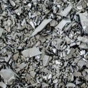
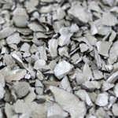
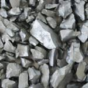
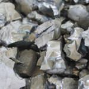

Chip Poly
For Efficient, Effective and Productive Ingot Manufacturing
Chip Poly는 Ingot Scrap 및 Chunk Type Poly Silicon을 Cracking 하여 5~40mm Size로 만든 것으로 Ingot 결정 성장시 반드시 투입되어야할 필수 원자재입니다.
FineEco의 Chip Poly는 원가 및 품질 측면에서 세계 최고의 경쟁력을 확보하고 있으며, 끊임없는 R&D를 통하여 경쟁력을 지속적으로 향상시키고 있습니다.
Custom Variations

2~10mm.

5~10mm.

10~20mm.

20~30mm.
폴리실리콘 잉곳, 웨이퍼 생산자등 업체 시설 및 특성에 최적화된 Poly Chip 크기를 수요와 요구에 맞추어 제공합니다.